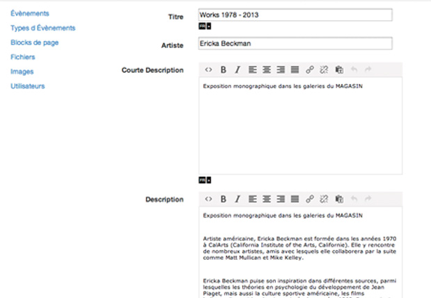

Lightweight, plug and play, extensible admin interface. Actually optimized for the SailsJS Framework.
Entirely written in javascript
with dependencies on bootstrap, jquery, backbone, underscore,
on a module logic with REQUIREJS
EASILY CONFIGURABLE:
config.json - define your project settings
schemas.json - define your models
EXTENSIBLE
AdmiralJS comes with a set of default field editors
- Text editors with multilingual support
- Images upload
- Collection of images (ex: for Galleries or slideshows), collection of anything...
- Date editors
- ...
but you might define your own editors and share it with the community !
PLUGGABLE
Initially developped to work with the Sailsjs restful api system, AdmiralJS can be easily plugged on any database though Sails or directly to any other restful api (crud configuration in config.json)
Documentation
View on GitHub
contact: studiodetelevision@gmail.com